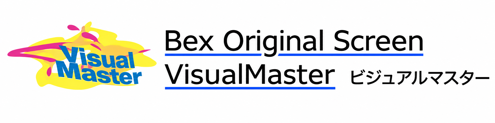
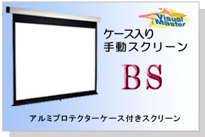

BSシリーズ
アルミプロテクターケースを備えた、手動式のスクリーンです。
- 手動式
- アルミプロテクターケース付き
PDF図面は別タブで表示します。DXF資料はZIP形式でダウンロードできます。掲載図面は作成当時の仕様を含みますので、ご注文・設置前に最新仕様と適合部品をご確認ください。
NTSC（4:3）タイプ
| 型番 | サイズ | PDF図面 | CAD図面 |
|---|---|---|---|
| BS-80 | 80型 | PDF（139 KB） | DXF（ZIP・78 KB） |
| BS-100 | 100型 | PDF（140 KB） | DXF（ZIP・79 KB） |
| BS-120 | 120型 | PDF（143 KB） | DXF（ZIP・79 KB） |
| BS-150 | 150型 | PDF（148 KB） | DXF（ZIP・96 KB） |
| BS-170 | 170型 | PDF（145 KB） | DXF（ZIP・85 KB） |
HD（16:9）タイプ
| 型番 | サイズ | PDF図面 | CAD図面 |
|---|---|---|---|
| BS-80HD | 80型 | PDF（140 KB） | DXF（ZIP・79 KB） |
| BS-100HD | 100型 | PDF（140 KB） | DXF（ZIP・78 KB） |
| BS-120HD | 120型 | PDF（141 KB） | DXF（ZIP・79 KB） |
| BS-150HD | 150型 | PDF（146 KB） | DXF（ZIP・86 KB） |
| BS-170HD | 170型 | PDF（101 KB） | DXF（ZIP・40 KB） |